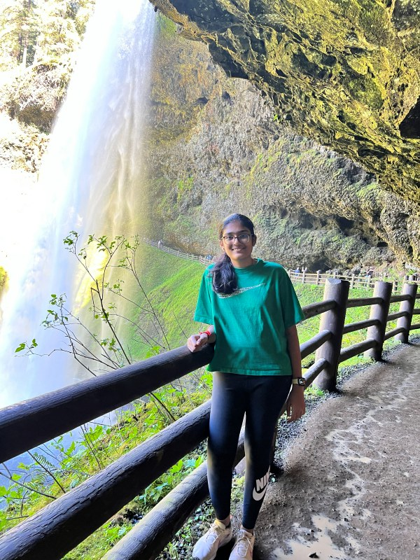

Robotics & Embodied AI
Control policies built directly on learned visual representations, and robots where perception, reasoning, and language behave as one system rather than separate modules bolted together.

Harshitha Inampudi
B.Tech Computer Science & Engineering (Honors) · IIT Bombay
I work at the intersection of machine learning and robotics. What holds my attention is how a system can perceive its surroundings, reason about them, and act reliably — especially when the environment is uncertain or only partially observable, and when performing well on average is not good enough.
Research Interests
Control policies built directly on learned visual representations, and robots where perception, reasoning, and language behave as one system rather than separate modules bolted together.
How policy-gradient methods hold up once hard safety constraints enter the picture, and where the existing safe-RL toolkit quietly breaks down in continuous control.
Whether a network can be trained not only to control a system but to certify that the system stays safe — learned certificates that carry something close to the weight of a proof.
Diffusion models, approximate inference, and sequential decision-making under uncertainty — the machinery underneath most of the above.
These threads are converging into the direction I want to pursue as a PhD: systems that combine learning with some form of guarantee about how they will behave.
Achievements
Contact
Open to PhD conversations, research collaborations, and anything at the intersection of robotics and machine learning.